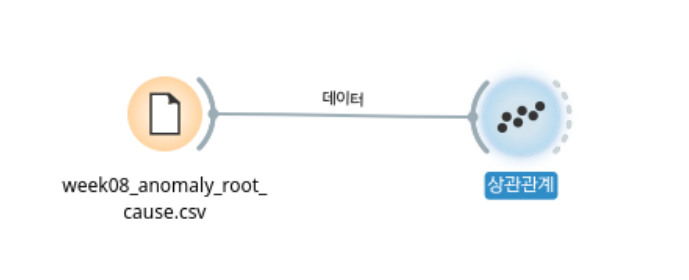
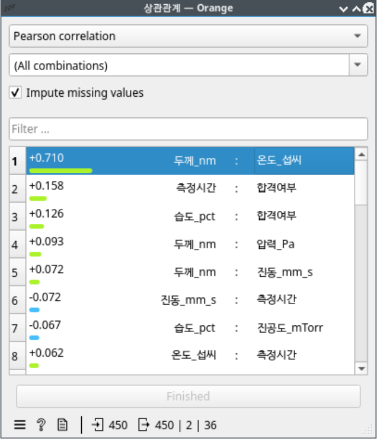
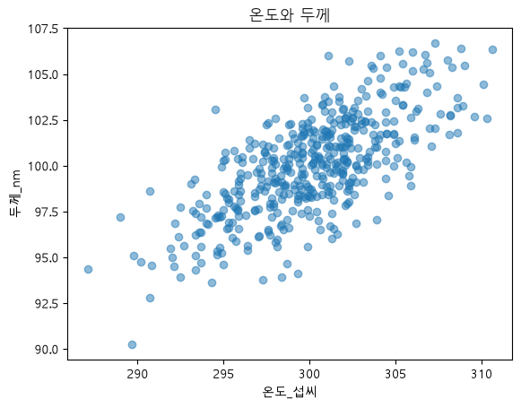
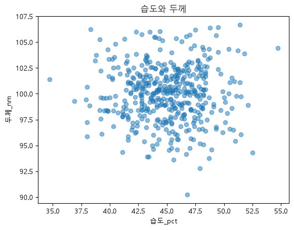

공정 이상과 원인 후보 찾기
오늘의 질문: "여러 공정 값 중 불합격과 관련 있어 보이는 것을 어떻게 찾고, 그것을 '원인'이라고 불러도 될까?"
- 공정 기록
- 450건
- 불합격
- 50건 (11.1%)
- 온도-두께 상관계수
- 0.71
- 진공도 범위 밖 불합격률
- 25.6%
오늘의 학습 목표
함께 움직이는 정도 읽기
여러 변수를 나란히 비교하기
"원인 후보"로 말하기
- 산점도 모양을 보고 "같이 오른다 / 반대로 움직인다 / 관계없다"를 구분하고, 상관계수를 "-1~1 사이의 함께 움직이는 정도 점수"로 읽을 수 있다.
- Orange3 상관관계(Correlations) 위젯으로 관계 있어 보이는 쌍을 먼저 훑어본 뒤,
corr()와 조건 검색으로 직접 확인할 수 있다. - 관계를 판단할 때 왜 여러 변수(관계없는 변수까지)를 나란히 비교해야 하는지 오늘 데이터의 숫자로 설명할 수 있다.
- 상관관계가 곧 원인이 아닌 이유를 생활 예시로 설명하고, 결과를 근거 숫자가 들어간 "원인 후보" 문장으로 쓸 수 있다.
왜 이걸 배워야 할까?
- 불량이 나오면 "그때 무엇이 달랐나"를 찾아야 같은 불량을 줄일 수 있다. 1차시에서 본 자동차 블랙박스처럼, 공장은 그 단서를 찾으려고 기록을 남긴다.
- 그런데 오늘 데이터에만 공정 값 열이 7개(온도, 압력, 진공도, 두께, 진동, 냉각수온도, 습도) 있다. 둘씩 짝을 지으면 21쌍이다. 하나하나 그래프를 그려 보기엔 많다.
- 상관관계는 "어느 짝부터 볼지" 순서를 정해 주는 도구다. 다만 데이터가 만들어 주는 것은 용의자 명단까지다. 범인을 확정하는 일은 따로 확인해야 한다.
지난 시간 복습
- 1차시 — 여러 열 함께 보기: 불합격 8건 중 5건이 세정 기록이었다. 그때 "세정이 원인"이 아니라 "세정은 원인 후보"라고 말하는 법을 처음 배웠다.
- 5차시 — 조건 검색으로 이상값 찾기:
df[df["압력_Pa"] < 0]처럼 조건 하나로 말이 안 되는 값을 골라냈다. 오늘은 여기에 조건 두 개를 묶는 법을 더한다. - 6차시 — 산점도: 두 숫자 열을 가로축·세로축에 놓고 점을 찍어 관계를 그림으로 봤다.
- 7차시 — 설비별 비교:
groupby로 설비마다 평균과 비율을 나란히 놓고 비교했다.
오늘의 데이터 — 열이 공장에서 뜻하는 것
- 파일:
data/weekly/week08/week08_anomaly_root_cause.csv(450행 12열). 한 행 = 설비 한 대가 작업 한 번을 하며 남긴 기록이다. - 교육용으로 만든 가상 데이터다. 실제 회사의 생산 기록이 아니다. 자세한 설명은 데이터 설명서에 있다.
- 아래 표의 챔버는 웨이퍼를 넣고 작업하는 설비 안의 밀폐된 방이다(오븐의 안쪽 공간을 떠올리면 된다).
| 열 이름 | 공장에서 뜻하는 것 | 생활 속 비유 |
|---|---|---|
설비번호, 공정명 | 어느 기계(EQ-01~EQ-04)가 어떤 작업을 했는지 | 어느 오븐으로 무엇을 구웠는지 |
온도_섭씨 | 작업 중 챔버 안 온도(℃) | 오븐 온도 |
압력_Pa | 챔버 압력 기록(가상 값) | 압력솥 안의 압력 |
진공도_mTorr | 챔버 안에 남은 기체의 압력. 숫자가 작을수록 공기를 더 많이 빼낸 상태(mTorr는 아주 작은 압력을 재는 단위) | 진공 포장 용기 안에 남은 공기 |
두께_nm | 웨이퍼 위에 쌓인 얇은 막의 두께(nm는 10억분의 1m) | 벽에 칠한 페인트의 두께 |
진동_mm_s | 설비가 떨리는 정도 | 탈수할 때 세탁기가 떨리는 정도 |
냉각수온도_섭씨 | 설비를 식히는 물의 온도 | 자동차 엔진을 식히는 냉각수 |
습도_pct | 클린룸 공기 속 물기(%) | 일기예보의 습도 |
합격여부 | 작업 뒤 검사 결과. 1 = 합격, -1 = 불합격 | 시험 합격/불합격 |
| 측정시간 | 로트번호 | 설비번호 | 공정명 | 온도_섭씨 | 압력_Pa | 진공도_mTorr | 두께_nm | 진동_mm_s | 냉각수온도_섭씨 | 습도_pct | 합격여부 |
|---|---|---|---|---|---|---|---|---|---|---|---|
| 2024-03-01 00:00 | LOT-0404 | EQ-02 | 식각 | 303.4 | 1017.3 | 4.92 | 104.66 | 0.682 | 19.52 | 47.4 | 1 |
| 2024-03-01 04:00 | LOT-0094 | EQ-04 | 증착 | 302.1 | 1016.5 | 5.12 | 100.03 | 0.472 | 20.90 | 50.4 | 1 |
| 2024-03-01 07:00 | LOT-0408 | EQ-02 | 증착 | 295.6 | 1018.4 | 5.24 | 98.62 | 0.636 | 19.00 | 45.7 | -1 |
| 2024-03-01 22:00 | LOT-0721 | EQ-04 | 식각 | 298.4 | 1010.8 | 4.55 | 93.92 | 0.499 | 19.26 | 43.3 | 1 |
| 2024-03-02 08:00 | LOT-0455 | EQ-02 | 산화 | 300.1 | 1015.9 | 5.27 | 101.28 | 0.728 | 20.43 | 43.0 | 1 |
| 2024-03-02 13:00 | LOT-0123 | EQ-04 | 세정 | 293.4 | 999.7 | 5.01 | 94.29 | 0.505 | 20.41 | 52.5 | 1 |
450행 중 앞 6행. 세 번째 행을 문장으로 읽으면 "3월 1일 7시, EQ-02 설비가 증착 작업을 했고, 진공도는 5.24 mTorr, 막 두께는 98.62nm였으며, 검사 결과는 불합격(-1)이었다"가 된다.
압력_Pa는 단위와 값의 자릿수가
실제 챔버 압력과 맞지 않는다. 오늘은 값의 크기를 실제 조건으로 해석하지 않고, 기록끼리 비교하는 연습용 숫자로만 쓴다.
상관관계 — 그림으로 먼저 감 잡기
수식은 쓰지 않는다. 6차시에서 그린 산점도(점을 찍은 그림)부터 보자. 두 값을 짝지어 점을 찍으면 점들이 만드는 모양은 크게 세 가지다.
예시 일러스트레이션 · 가상 숫자로 그린 그림
같이 오른다 — 공부 시간이 길수록 점수도 높다. 점들이 오른쪽 위로 올라간다. (r = 0.89)
반대로 움직인다 — 기온이 오를수록 핫팩은 덜 팔린다. 점들이 오른쪽 아래로 내려간다. (r = -0.90)
관계없다 — 키가 크다고 시험 점수가 높지 않다. 점들이 방향 없이 구름처럼 퍼져 있다. (r = -0.02)
| 점들의 모양 | 이렇게 부른다 | 생활 속 비유 |
|---|---|---|
| 오른쪽 위로 올라가는 띠 | 같이 오른다(양의 상관) | 2인3각 — 한 사람이 앞으로 가면 다른 사람도 따라간다 |
| 오른쪽 아래로 내려가는 띠 | 반대로 움직인다(음의 상관) | 시소 — 한쪽이 올라가면 다른 쪽은 내려간다 |
| 방향 없는 구름 | 관계없다(상관 거의 없음) | 각자 산책 — 한 사람이 어디로 가든 다른 사람과 상관없다 |
상관계수 — "함께 움직이는 정도" 점수
- 상관계수(r)는 산점도의 모양을 숫자 하나로 요약한 점수다. 언제나 -1에서 1 사이의 값이 나온다.
- 부호(+, -)는 방향을 알려준다. +는 같이 오른다, -는 반대로 움직인다.
- 크기(0에서 얼마나 먼가)는 세기를 알려준다. 1이나 -1에 가까울수록 점들이 좁은 띠로 모이고, 0에 가까울수록 구름처럼 퍼진다.
- 위 그림 아래의 r 값이 각 그림의 점수다. 0.89와 -0.90은 방향만 반대이고 세기는 거의 같다.
0.8과 0.1은 어떻게 달라 보일까
예시 일러스트레이션 · 가상 숫자로 그린 그림
r = 0.80 — 점들이 오른쪽 위로 향하는 좁은 띠를 이룬다.
r = 0.10 — 살짝 오른쪽 위로 기운 것도 같지만, 거의 구름이다.
| 점수 | 그림의 모양 | A 값을 알면 B 값을 짐작할 수 있나? |
|---|---|---|
| 0.8 | 오른쪽 위로 향하는 좁은 띠 | 꽤 잘 짐작할 수 있다. A가 크면 B도 대체로 크다. |
| 0.1 | 넓게 퍼진 구름 | 거의 짐작할 수 없다. A가 커도 B는 크기도, 작기도 하다. |
점수 크기 읽는 법 — 학습용 기준
부호는 떼고 크기(절댓값, |r|)만 본다. -0.8도 크기는 0.8이다.
| 크기 |r| | 이 과정에서 부르는 이름 | 그림으로 보면 |
|---|---|---|
| 0.7 이상 | 강함 | 좁은 띠가 뚜렷하다 |
| 0.3 ~ 0.7 | 중간 | 방향은 보이지만 퍼져 있다 |
| 0.3 미만 | 약함(뚜렷한 관계 없음) | 거의 구름이다 |
- 위 경계(0.3, 0.7)는 이 과정에서 같은 말로 이야기하려고 정한 학습용 기준이다. 분야와 데이터 양에 따라 다른 기준을 쓰기도 한다.
- 상관계수는 한 방향(곧은 띠)으로 함께 움직이는 정도만 잰다. "너무 낮아도, 너무 높아도 나빠지는" 관계는 0에 가깝게 나올 수 있다. 오늘 진공도에서 직접 확인한다.
데이터 분석을 처음 배우는 사람이야. 생활 속에서 '같이 오르는 두 값', '반대로 움직이는 두 값', '관계없는 두 값'의 예를 각각 2개씩 들어줘. 수식 없이 설명해줘.이렇게 확인해보자: AI가 든 예를 위 세 그림 중 어느 모양에 해당하는지 하나씩 맞춰보자.
상관관계 ≠ 인과관계 — 왜 "원인 후보"까지만 말할까
아이스크림과 물놀이 사고
- 날짜별로 아이스크림 판매량과 물놀이 사고 건수를 짝지어 산점도를 그리면 오른쪽 위로 올라간다. 상관계수도 높게 나온다.
- 그럼 아이스크림을 먹어서 물놀이 사고가 날까? 아니다. 둘 다 더운 날씨에 늘어날 뿐이다.
- 이렇게 두 값을 함께 움직이게 만드는 숨은 원인을 제3의 요인이라고 한다.
예시 일러스트레이션 · 개념도
주황 화살표가 진짜 영향의 방향이다. 아래 두 상자 사이의 빨간 점선은 "같이 움직인다"는 관계(상관관계)일 뿐이다.
"원인"이라고 말하기 전에 걸리는 세 가지
공정 데이터로 옮겨 보면
| 데이터로 말할 수 있는 것 | 데이터만으로는 아직 말할 수 없는 것 |
|---|---|
| "온도가 높은 기록일수록 두께가 두꺼웠다." | "온도를 올리면 두께가 두꺼워진다." — 같은 시간대의 다른 조건이 둘 다를 움직였을 수도 있다. |
| "진공도가 범위를 벗어난 기록에서 불합격이 많았다." | "진공도 때문에 불합격이 났다." — 그 기록들에서 다른 것도 함께 달랐을 수 있다. |
| "그래서 이 값은 원인 후보로 더 살펴볼 만하다." | "이 값이 원인이다"라는 단정 — 실험으로 확인한 뒤에야 말할 수 있다. |
이제 오늘 데이터에서 실제로 어떤 값들이 "용의자"가 되는지 찾아보자. 먼저 Orange3로 훑어보고, 이어서 파이썬으로 확인한다.
① Orange3로 먼저 훑어보기
같은 CSV(week08_anomaly_root_cause.csv)를 파일(File) 위젯으로 열고 상관관계(Correlations) 위젯에 연결한다.
상관관계 위젯은 숫자 열을 둘씩 짝지어 상관계수를 모두 계산하고, 크기가 큰 순서로 줄을 세워 보여준다.
Orange3가 처음이라면 부록: Orange3 시작하기를 참고하자.


순위표에서 읽어낼 것 세 가지
- 1위만 혼자 튀어나와 있다 — 두께-온도가 +0.710(강함)이다. 2위부터는 0.158, 0.126, 0.093…으로 모두 학습용 기준 "약함"이다. 1위가 크다는 판단은 다른 쌍들과 나란히 놓고 봤기 때문에 할 수 있다.
- 약한 점수는 우연으로도 나온다 — 3위 습도-합격여부(0.126)를 보자. 이 데이터를 만들 때 습도는 합격 여부와 관계없게 만들었다. 그런데도 0이 아니라 0.13 가까이 나왔다. 이 정도 점수만으로는 원인 후보로 올리지 않는다. (Orange3는 측정시간과 합격여부도 숫자로 바꿔 계산에 넣는다. 2위 측정시간-합격여부 0.158도 습도처럼 약한 점수다.)
- 진공도-합격여부는 위쪽에 없다 — 점수가 약 -0.02로 아래쪽에 있다. 그럼 진공도는 불합격과 관계가 없을까? 상관계수가 놓치는 모양일 수 있다. 아래에서 파이썬으로 다른 방법(범위 밖/안 나눠 보기)을 써서 확인한다.
② 파이썬으로 확인하기 — 그림 먼저, 점수는 나중
데이터 읽고 불합격 건수 확인하기
import pandas as pd
df = pd.read_csv("../../data/weekly/week08/week08_anomaly_root_cause.csv", encoding="utf-8-sig")
print(df.shape)(450, 12)
합격여부는 1 = 합격, -1 = 불합격이다. 불합격만 골라 개수와 비율을 센다(4차시 조건 검색).
fail_all = df[df["합격여부"] == -1]
print("불합격 건수:", len(fail_all))
print(f"전체 불합격률: {len(fail_all) / len(df) * 100:.1f}%")불합격 건수: 50 전체 불합격률: 11.1%
450건 중 50건이 불합격이다(합격 400건). 이 11.1%가 오늘의 "기준선"이다. 어떤 집단의 불합격률이 이보다 훨씬 높으면 눈여겨본다.
온도와 두께 — 그림부터
Orange3 1위였던 쌍이다. 점수를 계산하기 전에 산점도로 모양부터 본다.
import matplotlib.pyplot as plt
plt.rcParams["font.family"] = "Malgun Gothic" # 한글 글꼴(Windows). Mac은 "AppleGothic"
plt.rcParams["axes.unicode_minus"] = False # 음수 부호(-)가 네모로 깨지지 않게
plt.scatter(df["온도_섭씨"], df["두께_nm"], alpha=0.5)
plt.xlabel("온도_섭씨")
plt.ylabel("두께_nm")
plt.title("온도와 두께")
plt.show()
정답 노트북 실행 결과. 점들이 오른쪽 위로 올라가는 띠를 이룬다 — "같이 오른다" 모양이다.
alpha=0.5는 점을 반투명하게 해서 겹친 곳이 진하게 보이게 한다.
이제 같은 모양을 점수로 확인한다. A.corr(B)는 A 열과 B 열의 상관계수를 계산한다.
r_temp = df["온도_섭씨"].corr(df["두께_nm"])
print("온도-두께 상관계수:", round(r_temp, 2))온도-두께 상관계수: 0.71
0.71은 학습용 기준으로 강함이다. Orange3가 보여준 +0.710과 같다.
습도와 두께 — 관계없는 변수와 비교하기
"0.71이 크다"는 말은 무엇과 비교해서 큰 걸까? 같은 두께를 이번에는 습도와 짝지어 본다. 습도는 이 데이터를 만들 때 두께와 관계없게 만든 비교용 변수다.
plt.scatter(df["습도_pct"], df["두께_nm"], alpha=0.5)
plt.xlabel("습도_pct")
plt.ylabel("두께_nm")
plt.title("습도와 두께")
plt.show()
정답 노트북 실행 결과. 점들이 방향 없이 둥근 구름처럼 퍼져 있다 — "관계없다" 모양이다.
r_humid = df["습도_pct"].corr(df["두께_nm"])
print("습도-두께 상관계수:", round(r_humid, 2))습도-두께 상관계수: -0.01
- 같은 두께인데 온도와 짝지으면 0.71, 습도와 짝지으면 -0.01이다. 그림도 띠와 구름으로 확연히 다르다.
- 관계없는 변수의 점수가 0 근처라는 것을 알기 때문에, 0.71이 "특별히 크다"고 말할 수 있다.
- 지금 말할 수 있는 것: 온도는 두께의 원인 후보다. 두께의 후보라는 뜻이지, 불합격의 후보라는 뜻은 아니다. 온도가 불합격과도 관계있는지는 아래에서 따로 확인한다.
정상 범위를 벗어난 기록 찾기 — 진공도
Orange3에서 진공도-합격여부 점수는 약 -0.02로 아래쪽이었다. 그런데 진공도는 "범위를 벗어나면" 문제가 되는 값이다. 이런 값은 상관계수 대신 범위 밖과 범위 안으로 나눠서 불합격률을 비교한다.
학습용 정상 범위는 4.5~5.5 mTorr다. "범위 밖"은 조건이 두 개(너무 낮다, 너무 높다)라서, 5차시처럼 조건 하나로는 고를 수 없다.
|= 또는. 둘 중 하나만 맞아도 고른다. 범위 밖 = 4.5보다 작다 또는 5.5보다 크다.&= 그리고. 둘 다 맞아야 고른다. 범위 안 = 4.5 이상 그리고 5.5 이하.- 조건 하나하나를 반드시 괄호
( )로 감싼다. 괄호를 빼면 계산 순서가 꼬여TypeError가 난다. - 파이썬의
or,and를 쓰면ValueError가 난다. Pandas 조건에는|,&만 쓴다. |는 키보드에서 Shift를 누른 채\키(한글 키보드는₩키)를 누르면 입력된다.
vac_out = df[(df["진공도_mTorr"] < 4.5) | (df["진공도_mTorr"] > 5.5)]
vac_in = df[(df["진공도_mTorr"] >= 4.5) & (df["진공도_mTorr"] <= 5.5)]
print(f"범위 밖: {len(vac_out)}건, 범위 안: {len(vac_in)}건")범위 밖: 78건, 범위 안: 372건
두 집단 각각의 불합격률을 구한다. 계산은 (그 집단의 불합격 건수) ÷ (그 집단 건수) × 100이다.
fail_out = len(vac_out[vac_out["합격여부"] == -1]) / len(vac_out) * 100
fail_in = len(vac_in[vac_in["합격여부"] == -1]) / len(vac_in) * 100
print(f"범위 밖 불합격률: {fail_out:.1f}%")
print(f"범위 안 불합격률: {fail_in:.1f}%")범위 밖 불합격률: 25.6% 범위 안 불합격률: 8.1%
진공도_mTorr를 온도_섭씨로,
4.5와 5.5를 295와 305로 바꾸면 된다.
상관계수는 왜 진공도를 놓쳤을까
범위를 셋으로 나눠 세어 보면 이유가 보인다(강사가 미리 세어 둔 결과).
| 진공도 구간 | 기록 | 불합격 | 불합격률 |
|---|---|---|---|
| 4.5 미만(너무 낮음) | 39건 | 9건 | 23.1% |
| 4.5~5.5(정상 범위) | 372건 | 30건 | 8.1% |
| 5.5 초과(너무 높음) | 39건 | 11건 | 28.2% |
- 너무 낮을 때도, 너무 높을 때도 불합격이 늘어난다. 그림으로 그리면 U자 모양이다.
- 상관계수는 "한쪽이 클수록 다른 쪽도 크다(또는 작다)"는 한 방향만 잰다. 양쪽 끝이 다 높으면 서로 상쇄돼 0에 가깝게 나온다.
- 그래서 점수가 낮다고 "관계없다"고 단정하지 않는다. 그림이나 범위 비교로 한 번 더 본다.
왜 여러 변수를 함께 봐야 할까 — 오늘 숫자로 정리
1차시에서 "열 하나만 보면 놓치는 것이 많다"고 했다. 오늘 숫자로 그 말을 세 단계로 확인해 보자.
- "불합격률 11.1%"만으로는 어디를 봐야 할지 모른다.
- 진공도 열만 보면 "78건이 범위 밖"이라는 것만 안다. 그 기록들이 불합격과 관계있는지는 모른다.
- 진동 열만 보면 EQ-02의 평균 진동이 0.678로 다른 설비(약 0.50)보다 높다. "EQ-02 때문에 불합격이 많겠다"고 짐작하기 쉽다.
- 진공도: 범위 밖 불합격률 25.6% vs 범위 안 8.1%. 짝지어 보니 차이가 드러났다.
- 진동: EQ-02의 불합격률은 11.6%로 전체 11.1%와 거의 같다. 진동은 설비 점검거리일 수는 있지만, 불합격의 원인 후보로 올릴 근거는 약하다(연습문제에서 직접 계산한다).
- 같은 방법을 온도에 쓰면 범위 밖 9.8%, 범위 안 11.5%로 차이가 거의 없다(오히려 범위 밖이 조금 낮다).
- 상관계수도 마찬가지다. 온도-두께 0.71 옆에 습도-두께 -0.01을 놓아야 0.71이 크다는 것이 분명해진다.
| 같은 방법으로 본 변수 | 범위 밖 불합격률 | 범위 안 불합격률 | 판단 |
|---|---|---|---|
| 진공도(4.5~5.5 mTorr) | 25.6% (78건 중 20건) | 8.1% (372건 중 30건) | 차이가 크다 → 불합격의 원인 후보 |
| 온도(295~305℃) | 9.8% (92건 중 9건) | 11.5% (358건 중 41건) | 차이가 작다 → 불합격의 원인 후보로 보기 어렵다 |
| 참고: 전체 | 11.1% (450건 중 50건) | 기준선 | |
원인 후보로 말하기 — 오늘의 결론 문장
좋은 원인 후보 문장에는 네 가지가 들어간다.
- 근거 숫자 — 상관계수나 불합격률
- 무엇의 후보인지 — 두께의 후보인가, 불합격의 후보인가
- "원인 후보"라는 표현 — 단정하지 않는다
- 다음에 확인할 것 — 예: 진공도만 바꿔 보는 실험
| 아쉬운 문장 | 고친 문장 |
|---|---|
| "진공도가 불합격의 원인이다." — 숫자도 없고 단정했다. | "진공도가 정상 범위를 벗어나면 불합격률이 8.1%에서 25.6%로 높았다. 진공도는 불합격의 원인 후보로 더 살펴볼 만하다." |
| "온도는 원인 후보다." — 무엇의 후보인지 없다. | "온도는 두께와 함께 움직인다(r = 0.71). 온도는 두께의 원인 후보다. 불합격률은 범위 밖 9.8%, 안 11.5%로 큰 차이가 없었다." |
| "Orange3 3위인 습도도 원인 후보다." — 약한 점수에까지 후보 이름을 붙였다. | "습도-합격여부 점수는 0.13으로 학습용 기준 '약함'이다. 습도는 원인 후보로 올리지 않는다." |
파이썬 실습: 관계 찾고 원인 후보 문장 쓰기
학생용 노트북 week08_student.ipynb를 열고 위에서 아래로 차례대로 진행한다.
____(밑줄 네 개)로 비어 있는 곳만 채우면 된다.
핵심 용어 카드
상관관계
- 한 줄 설명
- 두 값이 함께 움직이는 관계. 같이 오르거나, 반대로 움직이거나, 관계없거나.
- 쉬운 비유
- 2인3각(같이 간다), 시소(반대로 간다), 각자 산책(관계없다).
- 데이터에서의 예
- 온도가 높은 기록일수록 두께가 두껍다.
- 자주 하는 오해
- 함께 움직이면 한쪽이 다른 쪽을 일으킨다고 생각하기 쉽다. 제3의 요인이나 우연일 수 있다.
상관계수
- 한 줄 설명
- 함께 움직이는 정도를 -1~1 사이 점수 하나로 나타낸 값.
- 쉬운 비유
- 산점도 모양에 매긴 점수. 부호는 방향, 크기는 세기.
- 데이터에서의 예
- 온도-두께 0.71(강함), 습도-두께 -0.01(약함).
- 자주 하는 오해
- 0에 가까우면 어떤 관계도 없다고 생각하기 쉽다. 진공도처럼 U자 모양 관계는 0 근처로 나온다.
인과관계
- 한 줄 설명
- 한 값의 변화가 실제로 다른 값의 변화를 일으키는 관계.
- 쉬운 비유
- 스위치를 누르면 불이 켜진다 — 누른 것이 켜진 이유다.
- 데이터에서의 예
- 상관계수만으로는 인과관계를 확인할 수 없다. 조건을 바꿔 보는 실험이 필요하다.
- 자주 하는 오해
- "상관관계 = 인과관계"라고 착각하는 것이 데이터 분석에서 가장 흔한 실수다.
제3의 요인
- 한 줄 설명
- 두 값을 함께 움직이게 만드는 숨은 다른 원인.
- 쉬운 비유
- 아이스크림 판매량과 물놀이 사고를 둘 다 늘리는 더운 날씨.
- 데이터에서의 예
- 온도와 두께를 함께 움직인 같은 시간대의 다른 조건이 있을 수 있다.
- 자주 하는 오해
- 데이터에 열로 적혀 있지 않으면 없다고 생각하기 쉽다. 기록되지 않은 요인일 수도 있다.
원인 후보
- 한 줄 설명
- 데이터에서 결과와 함께 움직여 "먼저 확인해 볼 곳"으로 떠오른 값.
- 쉬운 비유
- 범인이 아니라 용의자. 조사해야 범인인지 안다.
- 데이터에서의 예
- 진공도 범위 밖 불합격률 25.6% vs 범위 안 8.1% → 진공도는 불합격의 원인 후보.
- 자주 하는 오해
- 약한 점수(예: 0.13)에까지 후보 이름을 붙이기 쉽다. 근거 숫자와 "무엇의 후보인지"를 함께 적는다.
정상 범위(규격)
- 한 줄 설명
- 공정 값이 들어 있어야 한다고 미리 정해 둔 허용 범위.
- 쉬운 비유
- 정상 체온 범위.
- 데이터에서의 예
- 진공도 4.5~5.5 mTorr, 온도 295~305℃(교육용 예시).
- 자주 하는 오해
- 범위를 벗어나면 반드시 불합격이라고 생각하기 쉽다. 범위 밖 78건 중 불합격은 20건이었다.
비교용 변수
- 한 줄 설명
- "관계없으면 이 정도 점수가 나온다"를 보여주려고 함께 계산하는 변수. 대조군이라고도 한다.
- 쉬운 비유
- 건강검진 결과표의 참고치.
- 데이터에서의 예
- 습도-두께 -0.01 덕분에 온도-두께 0.71이 크다는 것을 알 수 있다.
- 자주 하는 오해
- "관계없음"이 나오면 분석이 실패했다고 생각하기 쉽다. 비교의 기준을 얻은 성공이다.
주의할 점 & 자주 발생하는 오류
ValueError: The truth value of a Series is ambiguous. Use a.empty, a.bool(), a.item(), a.any() or a.all().- 이유:
(조건1) or (조건2)처럼 파이썬의or,and를 썼다. - 해결: Pandas 조건 검색에서는 "또는"은
|, "그리고"는&를 쓴다.
TypeError: Cannot perform 'ror_' with a dtyped [float64] array and scalar of type [bool]- 이유:
df[df["진공도_mTorr"] < 4.5 | df["진공도_mTorr"] > 5.5]처럼 괄호를 빼서|가 엉뚱한 부분부터 계산됐다. - 해결:
(df["진공도_mTorr"] < 4.5) | (df["진공도_mTorr"] > 5.5)처럼 조건마다 괄호로 감싼다.
ValueError: could not convert string to float: 'EQ-02'- 이유:
df["설비번호"].corr(df["두께_nm"])처럼 글자(EQ-02 등)가 든 열에corr()를 썼다. - 해결: 상관계수는 숫자 열끼리만 계산한다. 설비별 비교는 7차시의
groupby를 쓴다.
KeyError: '진공도'- 이유: 열 이름은
진공도_mTorr인데진공도까지만 썼다. - 해결:
print(df.columns)로 정확한 열 이름을 확인하고 복사해 쓴다.
NameError: name 'vac_out' is not defined- 이유:
vac_out을 만드는 셀을 실행하지 않고 불합격률 셀부터 실행했다. - 해결: 맨 위 셀부터 차례대로 다시 실행한다.
NameError: name '____' is not defined, SyntaxError,
AttributeError, KeyError: '____' 등이 난다. 오류 메시지에 ____가 보이면 빈칸부터 채운다.
UserWarning: Glyph ... missing from font(s) DejaVu Sans. 경고가 나오고 한글이 네모로 보이면
plt.rcParams["font.family"] = "Malgun Gothic" 줄을 먼저 실행했는지 확인한다. Mac은 "AppleGothic"으로 바꾼다.
도전 실습
- 압력_Pa의 학습용 정상 범위 995~1025로 범위 밖/안 건수와 불합격률을 구한다.
- 진공도 코드에서 열 이름과 숫자만 바꾸면 된다(
vac_out,fail_out줄과 같은 모양). - 결과를 진공도(25.6% vs 8.1%), 온도(9.8% vs 11.5%)와 나란히 놓고, 압력을 불합격의 원인 후보로 볼 수 있을지 근거 숫자를 넣어 한 문장으로 적는다.
- 노트북 5단계 끝의 "도전 문제" 셀에서 풀어본다(원인 후보 문장을 먼저 끝낸 뒤).
결과 정리 & 퀴즈
더 많은 문제는 실습지에 있다.
AI로 한 걸음 더 — 질문하고 코드 받아보기
- "상관관계와 인과관계는 어떻게 다른가요? 아이스크림 말고 다른 생활 예시로 설명해주세요."
- "상관계수가 0에 가까운데도 두 값 사이에 관계가 있을 수 있나요? 예를 들어주세요."
- "관계를 판단할 때 왜 관계없는 변수와 비교해 보는 게 도움이 되나요?"
cols = ["온도_섭씨", "압력_Pa", "진공도_mTorr", "진동_mm_s", "냉각수온도_섭씨", "습도_pct"]
for col in cols:
r_col = df[col].corr(df["두께_nm"])
print(f"{col} - 두께_nm: r = {r_col:.2f}")온도_섭씨 - 두께_nm: r = 0.71 압력_Pa - 두께_nm: r = 0.09 진공도_mTorr - 두께_nm: r = 0.01 진동_mm_s - 두께_nm: r = 0.07 냉각수온도_섭씨 - 두께_nm: r = 0.01 습도_pct - 두께_nm: r = -0.01
- AI가 만든 코드는 직접 실행해서 결과를 확인한다. 이 결과는 Orange3가 순위표로 보여준 것을 코드로 다시 계산한 것이다.
- 여섯 개를 나란히 놓으니 온도만 0.71이고 나머지는 모두 0.1보다 작다. 여러 변수를 함께 비교하는 것이 왜 도움이 되는지 다시 보인다.
- for 반복문은 3차시에 배웠다. 리스트의 열 이름을 하나씩 꺼내 같은 계산을 반복한다.
연습문제 — EQ-02의 진동은 불합격과 관계있을까
"왜 여러 변수를 함께 봐야 할까"에서 본 진동 이야기를 직접 계산해 확인한다.
print(df.groupby("설비번호")["진동_mm_s"].mean().round(3))설비번호 EQ-01 0.507 EQ-02 0.678 EQ-03 0.503 EQ-04 0.501 Name: 진동_mm_s, dtype: float64
df[df["설비번호"] == "EQ-02"]로 EQ-02 기록만 고른다.
eq02 = df[df["설비번호"] == "EQ-02"]
eq02_fail = len(eq02[eq02["합격여부"] == -1]) / len(eq02) * 100
print(f"EQ-02 불합격률: {eq02_fail:.1f}%")
실행 결과: EQ-02 불합격률: 11.6% — 전체 11.1%와 거의 같다. EQ-02의 진동은 설비 점검거리일 수 있지만,
불합격의 원인 후보로 올릴 근거는 약하다. 진동 열만 봤다면 놓쳤을 판단이다.
AI로 재미있는 미니 프로그램 만들기 — 관계 점수 막대판
scores = {
"온도-두께": 0.71,
"습도-두께": -0.01,
"진동-두께": 0.07,
}
for pair, r_value in scores.items():
size = abs(r_value)
if size >= 0.7:
level = "강함"
elif size >= 0.3:
level = "중간"
else:
level = "약함"
filled = int(size * 10)
bar = "■" * filled + "□" * (10 - filled)
print(f"{pair}: {bar} r = {r_value:.2f} ({level})")온도-두께: ■■■■■■■□□□ r = 0.71 (강함) 습도-두께: □□□□□□□□□□ r = -0.01 (약함) 진동-두께: □□□□□□□□□□ r = 0.07 (약함)
- 딕셔너리에 다른 쌍(예: 압력-두께)을 추가해 막대판을 늘려보자. 값은 노트북 7단계 결과에서 가져온다.
- "약함"이면 "원인 후보로 올리지 않음", "강함"이면 "무엇의 원인 후보인지 적기"라는 안내 문장도 함께 출력하도록 AI에게 다시 요청해보자.
abs()(절댓값),.items(),int()로 소수점 버리기는 지금은 구경만 하자.if/elif/else와 딕셔너리는 2~3차시에 배웠다.
과제(다음 차시까지)
Jupyter Notebook 한 개에 순서대로 작성하고, 결과가 화면에 출력된 상태로 제출한다.
- 진공도와 불합격, 온도와 두께에 대해 각각 한 문장씩 쓴다.
- 문장마다 근거 숫자, 무엇의 후보인지, "원인 후보" 표현이 들어가야 한다.
냉각수온도_섭씨와두께_nm의 산점도를 그리고 상관계수를 구한다(오늘 2단계 코드에서 열 이름만 바꾼다).- 그림이 띠인지 구름인지, 학습용 기준으로 강함·중간·약함 중 무엇인지 적는다.
핵심 질문 → 데이터 연결
- 질문: Orange3가 보여준 관계와 직접 계산한 상관계수가 같은가? 원인 후보로 삼을 만한 변수는 무엇인가?
- 데이터로 답하기: Orange3의 두께-온도 +0.710과
corr()로 계산한 0.71이 같다. 습도-두께(-0.01)와 비교하면 온도는 두께의 원인 후보다. 불합격에 대해서는 진공도가 범위 밖 25.6% vs 범위 안 8.1%로 원인 후보이고, 온도(9.8% vs 11.5%)는 후보로 보기 어렵다. - 한 걸음 더: 상관계수가 약 -0.02로 0에 가까웠던 진공도가 범위 비교에서는 드러났다. 점수 하나, 열 하나만 보지 않고 여러 방법과 여러 변수로 나란히 비교하는 것까지가 오늘의 해석이다.
다음 차시 예고
- 오늘은 "무엇이 불합격과 함께 움직이는지" 찾았다. 다음 시간에는 온도·진공도 같은 공정 값으로 합격/불합격을 미리 예측하는 모델을 만든다. 먼저 Orange3로 모델을 만들어 보고, 이어서 파이썬으로 직접 학습시킨다.
- 오늘 배운 생각법은 그대로 이어진다. 예측이 잘 맞는다고 해서 "원인을 안다"는 뜻은 아니다.